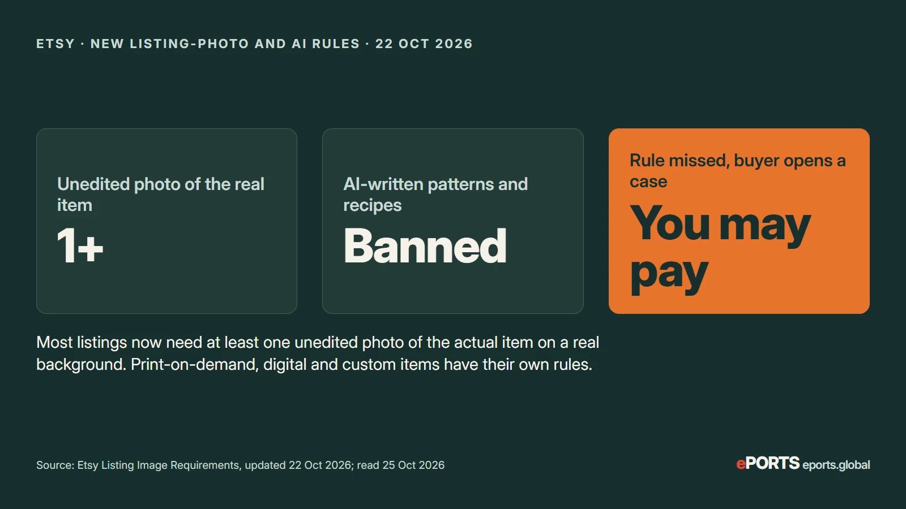

Marketplaces desk · Etsy
Etsy's new photo rule: one real, unedited picture for most products. Here's who has to fix what
Etsy now wants at least one unedited photo of the actual item on most listings, and it bans AI-written patterns and recipes. If a listing already has a qualifying photo, you may not need anything new. Here's how to tell which listings are at risk before a holiday buyer finds out for you.
The short version: On October 22 Etsy changed its rules on listing photos and AI. Most listings now need at least one photo of the actual item, against a real background, that hasn't been edited at all. Patterns, recipes and instructions written by AI are no longer allowed. If a listing doesn't meet the image rules and a buyer opens a case because the item is materially different, you may be the one paying the refund.
If you sell handmade or vintage goods, you probably took real photos already. The question is whether one of them is still untouched, or whether every picture has been through a filter, a background remover or an AI "enhance" button. With holiday orders about to start, this is the week to check.
Who may already be fine: shops whose listings each include an accurate, unedited photo of the actual item on a real background. If a production partner prints your original design on a standard product, a stock mockup you're authorized to use is allowed. Audio and other downloads with nothing to see can use representative images, as long as they don't mislead. Every other rule below still applies.
What Etsy actually changed
There are three rules, and they don't all hit the same shops.

One untouched photo. For most products, a listing must include at least one unedited photo of the actual item against a real background. Etsy means unedited literally: no crop, no color fix, nothing. Your other photos can still be edited, including with AI, as long as the item still looks like what arrives.
No AI-written guides. If you sell a pattern, a recipe or instructions, the part buyers rely on must be your own work. Patterns, recipes, seeds and similar products also need at least one real, unedited photo of a result made with them: the finished sweater, the baked cake, the flower grown from your seeds.
No bot-made listings. Listings created with no human involvement will be removed, and Etsy says the shop can go with them.
AI art itself is still allowed if you played a clear creative role, you disclose it, and you don't present it as handmade or entirely your own.
The real risk is the refund, not the robot
Most coverage has focused on Etsy's new detection tools. Those are real. Etsy is also adding a way for members to report misleading AI images, and to start, those reports help Etsy understand the problem and won't result in immediate enforcement. Etsy can still remove misleading listings, and repeated violations can go as far as shop removal.
The sharper edge is quieter. If your listing doesn't meet the image rules and a buyer opens a case saying the item is "materially different", Etsy may refund the buyer and you may be responsible for the amount. That's a refund on an order you already shipped, often in December, when you have the most orders.
So the useful question isn't "will Etsy catch me?" It's "if a buyer complains, can my listing show the item as it really is?"
Which listings to look at first
Etsy's exceptions decide a lot, so sort your listings before you touch a camera.
| What you sell | What Etsy asks for |
|---|---|
| Handmade or vintage items you can photograph | At least one unedited photo of the real item on a real background |
| Your original design printed by a production partner on a standard product | A stock mockup is allowed if its owner has authorized your use |
| Custom pieces you make yourself | Real photos of finished pieces you've made before |
| Patterns, recipes, seeds and similar | At least one real, unedited photo of a result made with it; AI images can't be the only ones |
| Digital downloads | A preview or excerpt of the real file; downloads with nothing visual can use representative images that don't mislead |
Start with your best sellers, then anything whose photos all came out of an editing app. Pattern and recipe shops that used AI to write the content have the biggest job. Adding a real photo won't fix that. The guide itself has to be your own work.
One point that's easy to miss: Etsy doesn't require the unedited photo to be first. Its advice is that your first photo should be the clearest, most realistic view of the item, because that's the one buyers see in search. If your first image is already honest, you can add the plain shot further along.
Choosing that first photo, one that earns the click and still looks exactly like what arrives, is a chapter of Etsy Basics.
What to do this week
- Sort your listings using the table above, and note the ones that are missing the photo Etsy asks for.
- Add what your row asks for. For most physical items, that's a photo of the real item on a real background, not edited or changed in any way. For patterns, recipes and seeds, it's a real, unedited photo of a result. For print-on-demand and digital downloads, follow the table.
- If you sell patterns or recipes, check that the content is your own work and that one listing photo is a real, unedited photo of a finished result.
- Keep your other photos honest. Lighting, exposure and color balance are fine if they match real life; crops and background changes are fine if the item stays accurate. Don't change its actual color, texture or condition, or hide damage. If you used AI to edit any photos, Etsy suggests noting in the description that the images were edited.
- Before your next batch of listings, work through our free "human half" worksheet, which covers the photo side of a listing: the lead image and the photos that make a stranger trust it.
One date for later: California, January 1
Etsy's announcement also flags a California law, SB 1050, that takes effect on January 1, 2027. If your listing images or videos prominently feature an AI-generated synthetic performer (a realistic human-looking figure or voice that isn't an identifiable real person), they may count as advertisements and may need a clear disclosure. Etsy suggests considering whether you need one and asking your own lawyer.
We'll watch for what Etsy said it will explore next: ways to tell buyers when AI has been used. Earlier from the desk: this year's holiday shipping dates, and how to find your own last order day.
What we checked: Etsy's Seller Handbook announcement and its Listing Image Requirements policy (last updated October 22, 2026), both first read on October 25 and checked again on November 2, 2026. Both are listed below.
Sources, checked 2 Nov 2026
- Etsy Seller Handbook, 'Important updates to AI use on Etsy', by James Ossman, read 2 Nov 2026. etsy.com
- Etsy Listing Image Requirements (House Rules), last updated 22 Oct 2026, read 2 Nov 2026. etsy.com
Applies to: Etsy sellers; the California note applies to listings that may reach buyers in California.
How this was made: researched from the sources below, checked claim by claim and edited by Drew Halden. Image 1 is an illustration. Editorial responsibility: ePORTS LLC. Nothing here is legal, tax or financial advice. Spotted an error? Tell us and we'll correct it on this page.